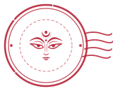

আমাদের গল্প: যা মন চায়, খাঁটি হাতে বোনা
পাহাড়ের কোমর তাঁত থেকে ঢাকার রাজপথ—অ্যালগরিদমের যুগে খাঁটি ঐতিহ্যের এক বোহেমিয়ান যাত্রা। যেখানে প্রতিটি সুতো মানুষের হাতে বাঁধা, প্রতিটি নকশায় কোনো না কোনো কারিগরের জীবনের স্পর্শ।
১. পাহাড় ও কোমর তাঁতের ছন্দ (The Rhythm of Indigenous Backstrap Looms)
চট্টগ্রাম হিল ট্র্যাক্টসের সবুজ পাহাড়ের খাঁজে খাঁজে যখন ভোর নামে, কাঠের তাঁতে সুতোর টানে একটা বিশেষ ধ্বনি ওঠে—'খট-খটাস, খট-খটাস'। এ কোনো যান্ত্রিক কারখানার নির্দয় শব্দ নয়; এটি হলো কোমর তাঁতের (Backstrap Loom) আদি ছন্দ। এই তাঁতে সুতোর টান তৈরি হয় কারিগরের নিজের শরীরের ভার ও নিঃশ্বাসের সাথে মিলিয়ে।
চাকমা, মারমা, ত্রিপুরাসহ পাহাড়ি সম্প্রদায়ের নারী বুননশিল্পীরা শত শত বছর ধরে এই তাঁতে বুনে আসছেন তাঁদের ঐতিহ্যবাহী থামি, পিনন-হাদি এবং রুক্ষ খাঁটি সুতির গামছা। কোনো কম্পিউটারাইজড গ্রিড নয়—প্রকৃতির ফুল, লতা, নদী আর জ্যামিতিক নকশাগুলো সরাসরি স্মৃতি ও আঙুলের স্পর্শ থেকে ফুটে ওঠে কাপড়ের বুকে।
"কোমর তাঁতের প্রতিটি ইঞ্চিতে তাঁতির বসার ভঙ্গি, পায়ের চাপ আর মনের শান্ত ভাব জড়িয়ে থাকে। কোনো আধুনিক পাওয়ারলুম মানুষের এই আত্মিক সংযোগ তৈরি করতে পারে না।"
২. 'যা মন চায় বেচি'—বোহেমিয়ান খেয়ালের দর্শন (The Philosophy of Mon Chaise)
মঞ্চাইছের জন্ম কোনো কর্পোরেট বিজনেস প্ল্যানে হয়নি। এর সূচনা আমাদের নিজস্ব বোহেমিয়ান খেয়াল থেকে—'যা মন চায় বেচি'। আমরা এমন এক সময়ে বাস করছি যেখানে বাজার চলে ট্রেন্ড, ক্লিকবেইট আর গণউৎপাদিত পলিয়েস্টার কাপড়ের দৌড়ে। মঞ্চাইছে সেই দৌড় থেকে সরে দাঁড়ানো এক শান্ত আশ্রয়।
আমাদের সঙ্গী সারু (Saru) ও পাকু (Paku)—আমাদের প্রতীক ও কৌতুকপূর্ণ চরিত্র। সারু বলে ঐতিহ্যের কথা, পাহাড়ি তাঁতের গাম্ভীর্যের কথা; আর পাকু হলো শহুরে খামখেয়ালিপনা, স্মৃতিচারণ ও অদ্ভুতুড়ে সৃষ্টির রূপক। এই দুইয়ের মেলবন্ধনেই মঞ্চাইছে: প্রাচীন হস্তশিল্পের সাথে আধুনিক আত্মবিশ্বাসের মেলবন্ধন।
এখানে কোনো বাঁধাধরা ঋতু নেই, ফাস্ট ফ্যাশনের কোনো তাড়াহুড়ো নেই। যখন আমাদের কারিগরেরা ভালো মন নিয়ে নতুন একটি পাড়ের নকশা তোলেন, কিংবা আমরা কোনো অদ্ভুত সুন্দর হস্তশিল্পের সন্ধান পাই—আমরা সেটাই সযত্নে আপনার জন্য নিয়ে আসি।
৩. তাঁতশিল্পীদের সরাসরি মর্যাদা ও মধ্যস্বত্বভোগীহীন বুনন (Direct Artisan Dignity)
ঐতিহ্যবাহী বুননশিল্প হারিয়ে যাওয়ার প্রধান কারণ কারিগরদের ন্যায্য পারিশ্রমিক ও প্রাপ্য সম্মানের অভাব। মধ্যস্বত্বভোগী আর পাইকারদের লোভের কারণে অনেক পাহাড়ি পরিবার তাঁদের পারিবারিক কোমর তাঁত বন্ধ করে দিতে বাধ্য হয়েছেন।
মঞ্চাইছের স্পষ্ট নীতি: মধ্যস্বত্বভোগীহীন সরাসরি মর্যাদা। আমরা সরাসরি বুননশিল্পী ও তাঁদের পারিবারিক তাঁতশালার সাথে কাজ করি। প্রতিটি পিস বুনতে যে কয়েক দিন বা সপ্তাহ সময় লাগে, তার প্রতিটি ঘণ্টার শ্রমকে সর্বোচ্চ সম্মান দিয়ে মূল্যায়ন করা হয়। আপনার প্রতিটি কেনাকাটা সরাসরি ওই প্রত্যন্ত পাহাড়ি নারীর স্বাধীন জীবিকা ও আত্মমর্যাদা সুনিশ্চিত করে।
৪. ধীরগতির স্পর্শ ও ১-এর ১ একক সৃষ্টি (Slow Craft & The 1-of-1 Soul)
মঞ্চাইছের একটি থামি বা গামছা হাতে নিলে আপনি দেখতে পাবেন কোথাও সুতোর টান সামান্য ঘন, কোথাও ডাইংয়ের গভীরতা এক ফোঁটা বেশি। আধুনিক কারখানা হয়তো একে 'ত্রুটি' বলবে, কিন্তু হস্তশিল্পের ভাষায় এটাই জীবনের প্রমাণ (Proof of Life)।
যে কাপড় প্লাস্টিকের রোলার থেকে মিনিটে একশ গজ বের হয়ে আসে, তার কোনো গল্প থাকে না। কিন্তু যে কাপড় কোমর তাঁতে ২০ দিনে তৈরি হয়েছে, তার ভেতরে জড়িয়ে আছে এক কারিগরের ধৈর্য, ভাবনা ও ইতিহাস। আমরা বিশ্বাস করি, কাপড়ে শুধু শরীর ঢাকা পড়ে না—কাপড় মানুষের আত্মপরিচয়ও বহন করে।

"মঞ্চাইছের প্রতিটি হস্তশিল্প খামখেয়ালির ভালোবাসায় তৈরি। এটি আপনার আলমারিতে জায়গা করে নিলে আপনি শুধুই একটি কাপড় ধারণ করছেন না, ধারণ করছেন এক প্রাচীন ও জীবন্ত ঐতিহ্য।"
আমাদের খাঁটি বুনন নিজের চোখে দেখুন
কোমর তাঁতের থামি, খাঁটি সুতির গামছা কিংবা আমাদের অদ্ভুতুড়ে সৃষ্টিগুলোর সংগ্রহ দেখতে ঘুরে আসুন ক্যাটালগে।